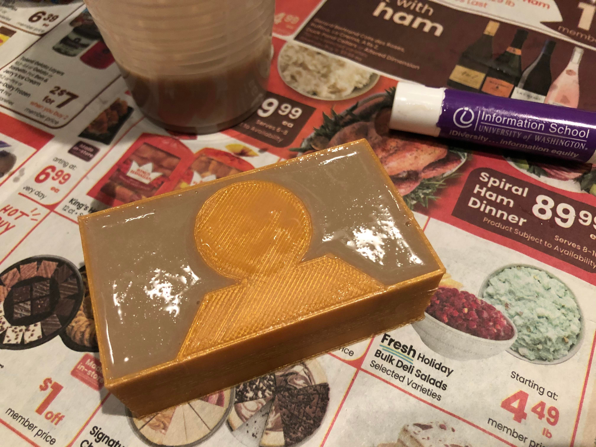

please see the project proposal for inspo + project plan~
here's the current WIP of the foosball table!
on wednesday, nov. 23 the day before thanksgiving, i purchased a wooden dowel rod that was long and thin-ish so that it could serve as foosball rods. the measurement was already visible on the tag. price was about $2. it was ok. i went to the MILL and got measurements of the cardboard using the yardstick as well as the caliphers. i cut out the cardboard to get the approximate dimensions.
on sunday, nov. 27, i remembered about this assignment, panicked, and decided to get started on my CAD modeling that i'd been seriously procrastinating on. after taking prof. nadya's feedback into consideration (which was to simplify the models i would be using for the foosball players and keeping the size of the foosball game small-ish), i decided to simplify my previous sketch. i drafted a new sketch. i researched foosball tables some more, and found out that a competition-size foosball table's features are 56 inches long, 30 inches wide, and 36 inches tall, so i decided to scale it down to the cardboard measurements i had. i also found that a goal size was 7" by 2.5", so i decided to scale it down.
the sketch helped me realize that for laser cutting, i needed two "walls" with the cut-out "goals" on opposite ends that needed to fit snugly into the existing cardboard that already was foldable. i created some basic designs in rhino, see below. this would be for laser cutting!
i did some research on rods, and found out that "The offensive rod should be about 2 inches longer than your goalie rod." so i made a note to measure the rods differently. i accidentally snapped the rod in half just by stepping on it, so i decided to work around that by cutting it in fourths using sara cagle's suggestion to use the miter saw for speed or a handsaw with a miter block to hold it still or maybe some big scissors to cut it in half. i emailed the MILL staff to see if the saw is available at the MILL. i tried using kitchen scissors on the rod but i don't think it worked very well.
i made the box.

after laser cutting the box, i moved on to 3d printing and molding & casting! i started by drawing a basic shape of the player and after some consultation with junchao and sara, i decided to turn this mold into a two part mold with the top part which i named "heads" and the bottom part which i named "tails".

i then 3d printed it.

and then i filled the mold of the mold with the smooth-on.

more to come soon!
box (rhino) / box (illustrator for laser cutting) / player (rhino)
thank you to junchao, sara, paisley, and others for their help with this final project. still working on it!